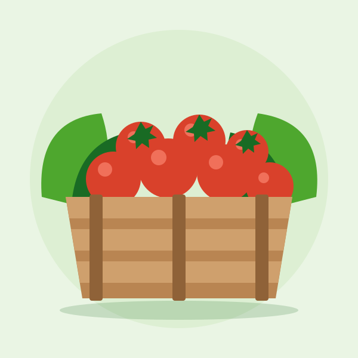
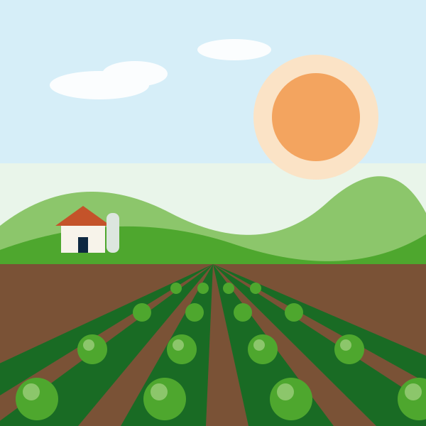
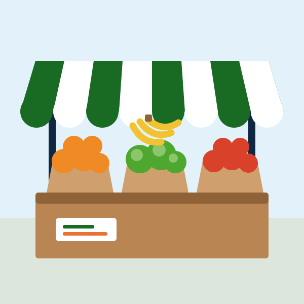

Quem produz
- Tem dificuldade para encontrar compradores.
- Perde valor por falta de visibilidade.
- Depende de indicações para vender a colheita.
Produtores, compradores e transportadores no mesmo ambiente, com ofertas e demandas organizadas por região.
Projeto acadêmico de demonstração. Todos os dados são fictícios.

Hoje, boa parte das negociações acontece em grupos de WhatsApp e por indicação. Quem vende e quem compra não se encontram com facilidade.


Uma plataforma feita só para o hortifruti, onde cada participante tem um perfil profissional e encontra o que procura perto de si.
Produtores, compradores e transportadores com perfil profissional: quem são, onde atuam e com quais produtos trabalham.
Quem vende publica o que tem. Quem compra publica o que precisa. A busca mostra primeiro o que está na sua região.
Produtos disponíveis com quantidade e preço, e uma nota para cada perfil, dada por quem já fechou negócio com ele.
Crie seu perfil como produtor, comprador ou transportador e informe sua cidade e seus produtos.
Publique o que você tem para vender ou o que precisa comprar. O anúncio aparece para quem está na sua região.
500 caixas de tomate disponíveisConverse, envie a proposta, combine o frete e avalie a outra parte quando o negócio for concluído.
Só hortifruti. Unidades, produtos e filtros pensados para frutas, verduras e legumes.
Produtores e compradores no mesmo ambiente, sem depender de vários grupos de mensagens.
Oferta, demanda e logística combinadas em um só lugar, do primeiro contato à entrega.
Reputação construída com avaliações de quem já negociou com cada perfil.
"Se o LinkedIn revolucionou as conexões profissionais, a HortLink pode revolucionar as conexões do agronegócio hortifruti."
Cadastre um perfil de teste ou entre com um usuário de exemplo.